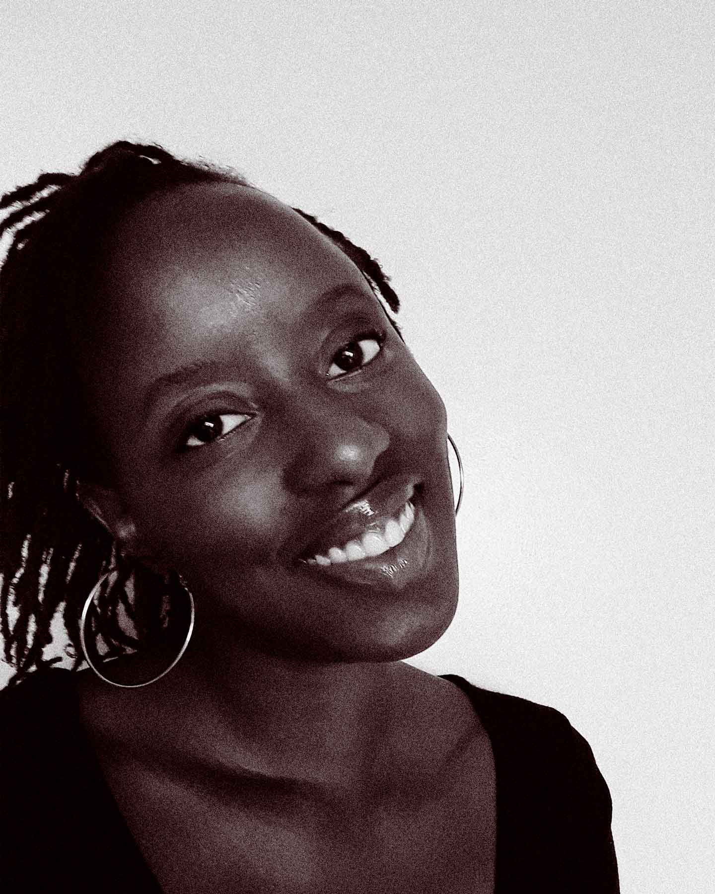

I never intended to become a graphic designer. This world just opened up to me a few years ago, and I honestly have not looked back since. Deciding to go back to school two years ago was the best decision I ever made. I never thought that an artistic career was a thing until I came the design studies program at Algonquin College. One thing led to the next and here I am with one year left in the Graphic Design program. Best. Decision. Ever.
I am passionate about finding solutions. Problem solving is fun to me, and I find that this field gives you the opportunity to do just that. I love layout, bold typography and illustration. If you think we can work together, reach out! I would love to hear from you.